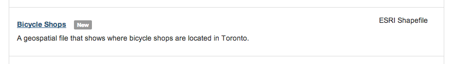

Web maps and your data.
Hi
Let's talk about GeoJSON.
But first.
Let's talk about open formats
ESRI shapefile to
KML to
GeoJSON
GeoJSON just works.
{
"type": "FeatureCollection",
"features": []
}
{
"type": "FeatureCollection",
"features": [{
"type": "Feature",
"geometry": {
"type": "GEOMETRY TYPE",
"coordinates": [LONGITUDE, LATITUDE]
}
}]
}
Let's look at three geometry types:
Point
{
"type": "FeatureCollection",
"features": [{
"type": "Feature",
"geometry": {
"type": "Point",
"coordinates": [-79.456619918346, 43.655750033205]
},
"properties": {
"marker-color": "#1087bf",
"marker-size": "medium"
}
}]
}
LineString
{
"type": "FeatureCollection",
"features": [
{
"type": "Feature",
"geometry": {
"type": "LineString",
"coordinates": [
[-79.458419680595, 43.655290114084],
[-79.39434170723, 43.6471856448971]
]
},
"properties": {
"stroke": "#1087bf",
"stroke-opacity": 1,
"stroke-width": 4
}
}
]
}
Polygon
{
"type": "FeatureCollection",
"features": [
{
"type": "Feature",
"geometry": {
"type": "Polygon",
"coordinates": [
[
[-79.458430409431, 43.655286232895],
[-79.452352523804, 43.639429482344],
[-79.443426132202, 43.636882696096],
[-79.394309520721, 43.647007085851],
[-79.402227401733, 43.667188660125],
[-79.458430409431, 43.655286232895]
]
]
},
"properties": {
"fill": "#1087bf",
"fill-opacity": 0.2,
"stroke": "#1087bf",
"stroke-opacity": 1,
"stroke-width": 4
}
}
]
}
All together
{
"type": "FeatureCollection",
"features": [
{
"type": "Feature",
"geometry": {
"type": "Point",
"coordinates": [-79.456619918346, 43.655750033205]
}
}, {
"type": "Feature",
"geometry": {
"type": "LineString",
"coordinates": [
[-79.458419680595, 43.655290114084],
[-79.39434170723, 43.6471856448971]
]
}
}, {
"type": "Feature",
"geometry": {
"type": "Polygon",
"coordinates": [
[
[-79.458430409431, 43.655286232895],
[-79.452352523804, 43.639429482344],
[-79.443426132202, 43.636882696096],
[-79.394309520721, 43.647007085851],
[-79.402227401733, 43.667188660125],
[-79.458430409431, 43.655286232895]
]
]
}
}
]
}
BTW: How were those maps rendered?
<!DOCTYPE html>
<html>
<head>
<meta charset='utf-8'>
<script src='https://api.tiles.mapbox.com/mapbox.js/v2.0.1/mapbox.js'></script>
<link href='https://api.tiles.mapbox.com/mapbox.js/v2.0.1/mapbox.css' rel='stylesheet' />
</head>
<body>
<div id='map'></div>
<script>
L.mapbox.accessToken = 'TOKEN';
var map = L.mapbox.map('map', 'USERNAME.MAPID');
map.setView([43.6659, -79.4390], 13);
var features = L.mapbox.featureLayer()
features.loadURL('FILENAME.geojson')
features.addTo(map);
</script>
</body>
</html>
Data that matters to us.
Bicycle shops

Convert the ESRI
Shapefile to GeoJSON using
QGIS.
What it looks like rendered?
Bike shops!
var markers = L.mapbox.featureLayer();
markers.loadURL('bikes.geojson');
markers.addTo(map);
Tooltips? Color?
Afterall, there's other data in this file
{ "type": "Feature",
"geometry": {
"type": "Point",
"coordinates": [ -79.368594933508703, 43.6549938877586 ]
},
"properties": {
"ADDRESS": "242 Queen St E",
"POSTAL_CD": "M5A 1S3",
"NAME": "Charlie's Bike Joint",
"PHONE": "416-546-2200",
"EMAIL": "charlies@thebikejoint.com",
"RENTAL": "NO"
}
},
Fancy Bike shops!
This just scratches the surface.
Technology is helping us democratize stuff
@benbalter
QA:
1. What if my data is in a different format like CSV?
2. What if my data doesn't contain latitude and longitude coordinates?
one stone
toronto-attractions.csv
Address,Address Info,City,Province,Title,Category,Phone Number
1675 Lake Shore Blvd East,,Toronto,Ontario,Woodbine Beach,Beach,311
195 Rouge Hills Drive,,Toronto,Ontario,Rouge Beach,Beach,311
350 King Street West,,Toronto,Ontario,TIFF Bell Lightbox,Cinema,416-599-8433
2901 Yonge St,,Toronto,Ontario,Alexander Muir Memorial Gardens,Featured Park,311
1675 Lake Shore Boulevard East,,Toronto,Ontario,Ashbridges Bay Park,Featured Park,311
1 Brimley Road South,,Toronto,Ontario,Bluffers Park (Scarborough Bluffs),Featured Park,311
256 Centennial Park Road,,Toronto,Ontario,Centennial Park,Featured Park,311
7450 Kingston Road,,Toronto,Ontario,Glen Rouge Campground,Featured Park,416-287-2267
201 Guildwood Parkway,,Toronto,Ontario,Guildwood Park,Featured Park,416-397-2628
1873 Bloor Street West,,Toronto,Ontario,High Park,Featured Park,311
205 Humber College Blvd,,Toronto,Ontario,Humber Arboretum,Featured Park,416-287-2267
2075 Queen Street East,,Toronto,Ontario,Kew Gardens,Featured Park,311
550 Broadview Ave,,Toronto,Ontario,Riverdale Park East,Featured Park,311
500 Gerrard Street East,,Toronto,Ontario,Riverdale Park West,Featured Park,311
1749 Meadowvale Road,,Toronto,Ontario,Rouge Park,Featured Park,905-713-6038
479 Queen's Quay West,,Toronto,Ontario,Toronto Music Garden,Featured Park,311
Toronto attractions!
<!DOCTYPE html>
<html>
<head>
<meta charset='utf-8'>
<title></title>
<script src='https://api.tiles.mapbox.com/mapbox.js/v2.0.1/mapbox.js'></script>
<link href='https://api.tiles.mapbox.com/mapbox.js/v2.0.1/mapbox.css' rel='stylesheet' />
<script src='https://api.tiles.mapbox.com/mapbox.js/plugins/leaflet-omnivore/v0.2.0/leaflet-omnivore.min.js'></script>
</head>
<body>
<div id='map'></div>
<script>
L.mapbox.accessToken = 'TOKEN';
L.mapbox.map('map', 'USERNAME.MAPID', {
zoomControl: false
});
omnivore.csv('../data/attractions.csv').addTo(map);
</script>
</body>
</html>